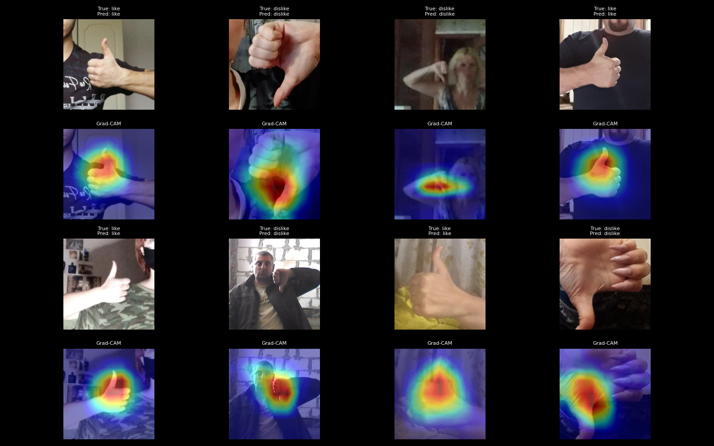
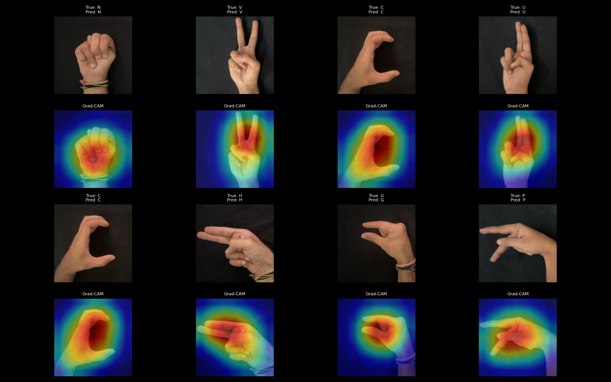
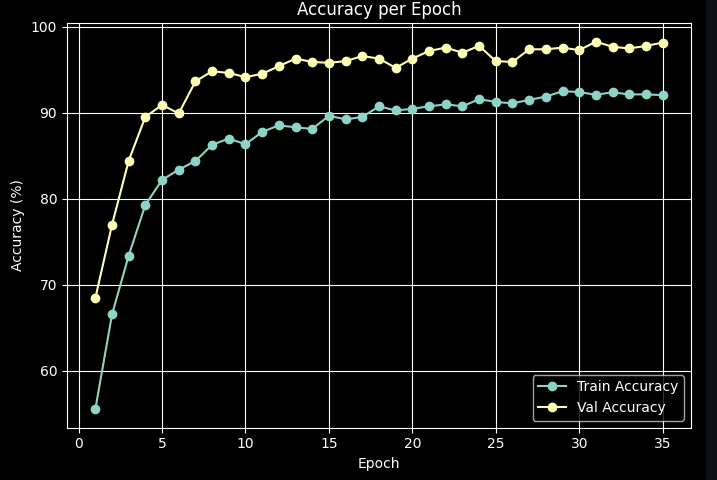
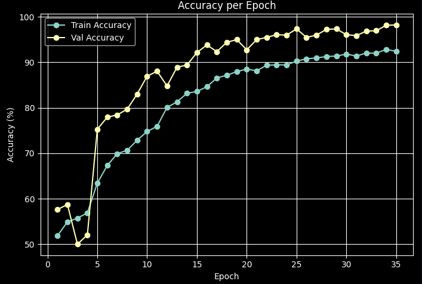
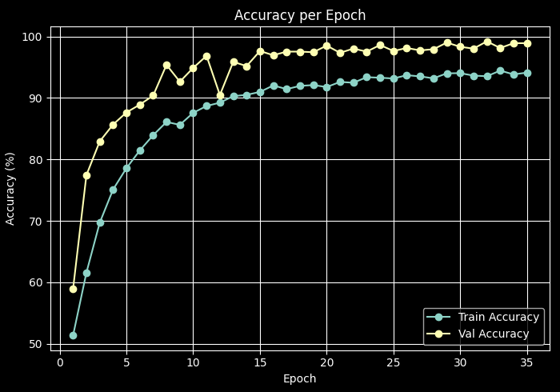

← All projects
Hand Gesture Recognition using CNNs
Coder, Tester, Data Analyzer & Researcher · 2025
PythonsklearnTensorFlowJupyter Google CollabTorch 2.10.0 ResNet34 VGG-16ShuffleNetV2Coder, Tester, Data Analyzer & Researcher · 2025
PythonsklearnTensorFlowJupyter Google CollabTorch 2.10.0 ResNet34 VGG-16ShuffleNetV2This project uses convolutional neural networks to recognize hand gestures from images. We trained and compared three architectures (ShuffleNetV2, ResNet-34 and VGG-16-BN) on three datasets: HaGRID (like and dislike gestures), ASLDigits (digits 0 to 9) and SignAlphaSet (the ASL alphabet). In total, we trained 11 models, including two VGG-16-BN models that use transfer learning. Each model was evaluated with classification reports, confusion matrices, loss curves and Grad-CAM visualizations that show which parts of the image the model relied on. A live-camera notebook runs the trained models on a webcam feed for real-time recognition.
I worked on this as part of a team and contributed to most parts of the project. That included building the data pipelines for each dataset (label mappings, augmentation and random background replacement), training and evaluating the models, producing the evaluation plots and Grad-CAM visualizations, and helping with the real-time webcam demo. We kept the train, validation and test splits in saved files so every model was compared on the same data.




